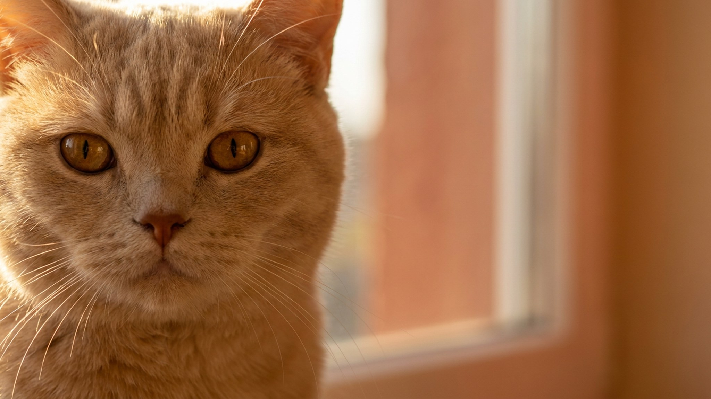

Многие берут «пушистого британца» и удивляются: в стандарте британская короткошёрстная — гладкая, а тут роскошная полудлинная шуба. Это не ошибка заводчика, а отдельная порода — британская длинношёрстная. Характер у неё почти тот же спокойный и независимый, что у короткошёрстной родни, а вот шерсть добавляет владельцу работы. Ниже — чем эти кошки отличаются, чего ждать от характера и как ухаживать за шубой, чтобы она не сваливалась.
🐾 Спросите AI-ветеринара прямо сейчас
AnimaLife — приложение, где AI-ветеринар отвечает на вопросы о кошке или собаке 24/7. Бесплатно, без записи и очередей.
Британская длинношёрстная — «полнокровный» родственник короткошёрстного британца: тот же плотный костяк, круглая голова, знаменитые «плюшевые щёки». Разница — ген полудлинной шерсти, из-за которого шуба густая, с богатым подшёрстком и пышным хвостом-«лисьим». Внешне это тот же британец, только в мягком меховом облаке.
Окрасы — вся палитра британцев: от классического голубого до колор-пойнта и шоколадного. По типу телосложения кошка тяжелее, чем кажется: под шерстью — крепкая, коренастая порода.
Британская длинношёрстная — уравновешенный интроверт. Она привязана к хозяину, но проявляет любовь сдержанно: чаще ляжет рядом, чем полезет на руки. Тисканья и ношение «как младенца» большинство представителей породы терпит без восторга.
🐾 Дневник здоровья питомца — в кармане
Вес, прививки, симптомы и напоминания в одном приложении. AnimaLife следит за здоровьем питомца вместо вас.
🐾 Понравился разбор?
Подпишитесь на канал — каждый день разбираем по одному тревожному симптому у кошек и собак: что в пределах нормы, а когда пора к врачу. Подпишитесь, чтобы не пропустить разбор, который может спасти здоровье вашего питомца.
Плотный подшёрсток красив, но склонен сваливаться в колтуны — особенно за ушами, под лапами и на «штанишках». Без регулярного вычёсывания шуба быстро теряет вид, а кошка глотает больше шерсти при вылизывании.
Флегматичный нрав и хороший аппетит легко приводят к полноте, а под пышной шубой лишние килограммы не сразу заметны. Проверяйте кондицию на ощупь — рёбра должны прощупываться под небольшим слоем жира. Держите порции под контролем, добавьте игру и вертикальные маршруты по квартире. Как и всем породистым кошкам, британской длинношёрстной нужны плановые осмотры у ветеринара — регулярное наблюдение помогает заметить возрастные изменения вовремя.